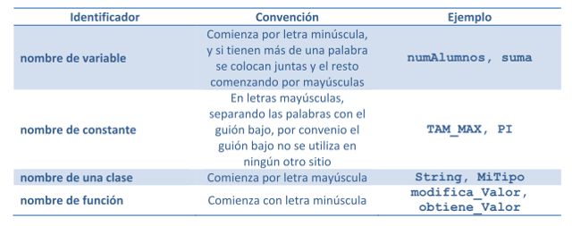

Un ISBN es un código normalizado internacional para libros (International Standard Book Number). El ISBN se compone de 5 elementos separados entre sí por espacio o guion. Tres de los cinco elementos pueden variar en longitud: © 2014 International ISBN Agency
Los identificadores son los nombres que el programador asigna a variables, constantes, clases, métodos, paquetes, etc. de un programa.  © 2017 Anexoextra